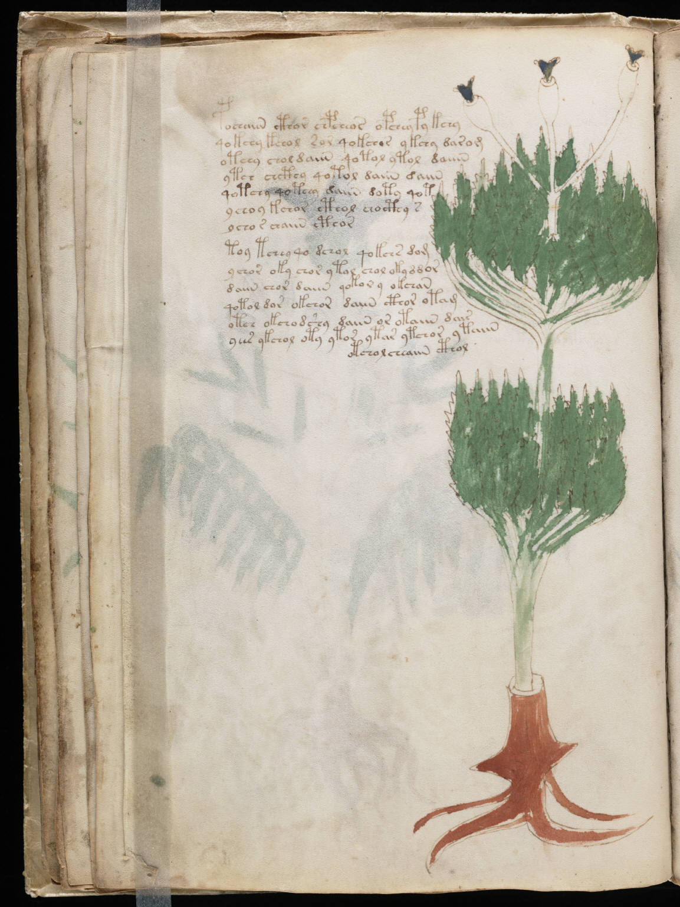

f19v
1pochaiin cthor chpcheos opchey py kchy2qokchy kchol sor qokchos ykchy darom3otchy chol daiin qotol ytol daiin4ytch chcthy qotol daiin daiin5qotchy qoteey daiin doty qot6ychoy kchor cthol chocthy s7ycho r chaiin cthor8toy tchey qo dchol qokchs dom9ychor oky chor ytal chol oky ddor10daiin chor daiin qokor y okchan11qotol dar okchor daiin cthor otam12otch okchodshy daiin or otaiin dais13yees ykchol oty ytor ytar ytchor ytaiin14otcholcheaiin cthol
